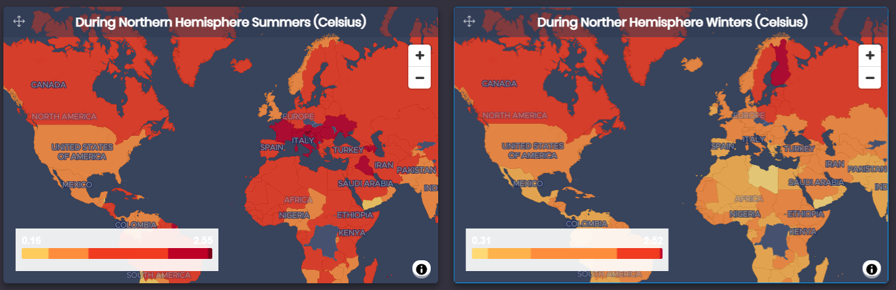

Powered by
The data in the ‘Global Temperature Rise’ dashboard is provided publicly by the Food and Agriculture Organization of the United Nations.
The full documentation on this data can be found in the Temperature change statistics 1961–2020 (Faostat Analytical Brief 19).
The data you see provides surface air temperature changes (⁰C) measured over the global land area. It covers the period 1961-2020 for 190 countries and 38 territories. The documentation also indicates that temperature change data were produced in collaboration with the NASA Goddard Institute for Space Studies (NASA–GISS).
Temperature change is calculated over a baseline ‘climate norm’ corresponding to the period 1951–1980.
The dashboard will initialize for the date range 2010-2020.
Disclaimer: The FOASTAT dataset includes both countries and territories in its area data We include all of these in our 'Area' selector. For more accurate average temperature increase data we suggest picking out countries or territories explicitly. For example, for the whole World, select 'World' in the Area picker.
At the bottom you will see 2 maps next to each other. These maps display average temperature rises for Northern Hemisphere Summer time and winter time respectively. Use this to see some surprising results. For example, this shows us that while Europe has seen warmer summers, Northern America has on average had a higher increase in temperature in the winters.
In 2020, global mean annual temperature change over land was the highest in the instrumental record, 1.71 ⁰C above the 1951–1980 climate normal (Figure 1).The global mean annual temperature change, averaged over the past decade (2011–2020) was 1.31 ⁰C and well above earlier periods. It was 1.01 ⁰C in the previous decade (2001–2010) and 0.58 ⁰C in the decade before (1991–2000).
In 2020, the mean annual temperature change was largest in Europe (3.3 ⁰C), followed by Asia (1.5 ⁰C), Oceania and South America (1.3 ⁰C), Africa and North America (1.2 ⁰C).
Well, it’s up to you what you make of this data. But one thing that’s for sure is that the planet is warming. And this will change many things. We have linked to some articles we find interesting and insightful into what temperature rises mean for our lives, what causes it and why it’s important to tackle in the sidebar.